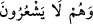

“ kelimeleri “Onun yanından uzaklaşıp gittim” anlamına gelir. “ (cünüb)” kelimesi de bu fiilden türetilmiştir; çünkü kişiyi namazdan, mushafa
(cünüb)” kelimesi de bu fiilden türetilmiştir; çünkü kişiyi namazdan, mushafa
dokunmaktan vb. şeylerden uzaklaştırır. “ ifâdesi “akraba olmayan uzak
komşu” anlamına gelir. Aynı ifâdenin “Senin bitişiğindeki, yanındaki komşu” mânâsına
geldiği de söylenir.
“ Onlar bunun farkında olamadılar; yâni Mûsâ’nın kızkardeşinin
kendilerini takip ettiğini ve(ya) onun Mûsâ’nın kızkardeşi olduğunu anlayamadılar.
12. Biz daha önceden (annesine geri verilinceye kadar) onun süt analarını
kabulüne (emmesine) müsâade etmedik. Bunun üzerine ablası: Size, onun bakımını
namınıza üstlenecek, hem de ona iyi davranacak bir âile göstereyim mi? dedi.
“Biz daha önceden (annesine geri verilinceye kadar) onun süt analarını kabulüne
(emmesine) müsâade etmedik.”
“ (haram kıldık)” ifâdesi, yasaklamak, men etmek ve müsâade etmemek
mânâlarına gelir. Nitekim Allah Teâlâ (kendisine şirk koşan kimse hakkında), “Allah ona cenneti haram kılmıştır (girmesine mâni olmuştur)” (el-
Mâide, 5/72) buyurmuştur. Çünkü mükellef olmayan sabî bir çocuğa tahrimin bir mânâsı
yoktur. Yani, biz Mûsâ’nın süt annelerinden birini emmesine mâni olduk. Annesinin sütü
dışındaki sütü içmesini engelledik; onda başka kadınların memesine karşı bir isteksizlik
ve nefret yarattık. Bu, kızkardeşinin onun izini takibinden önce, veya Mûsâ’nın annesine
iâdesinden önce idi. Nitekim Celâleyn’de de böyle geçmiştir. Veya annesinin
gelmesinden önce idi. (Ebü’l-Leys). Ve yahut da Allah’ın geçmiş kazasında böyle idi.
Çünkü biz onun annesine geri verilme kazasını takdir etmiştik. Nitekim Keşfü’l-
esrâr’da bu görüşe yer verilmiştir.
kelimesi kelimesinin çoğuludur. Süt emziren, yâni süt emzirme özelliğine
sâhip olan kadın demektir. Zira emzirme sabit ve devamlı bir sıfattır. Süt emzirme fiilini
yapmadığı hallerde bu kelime “tâ”sız kullanılır. Çocuğu emzirme hâlinde olan kadına
ise kelime “tâ”lı olarak yani
şeklinde kullanılır. Çünkü emzirme devam eden bir
sıfat olduğu için mutlaka bir alameti olması gerekir ki o kelimenin sonuna getirilen
“tâ”dır. Ya da kelimesinin çoğuludur ki, bu durumda anlam ya emzirme yahut da
emzirme mahallidir ki o da göğüstür. Yâni kadının, çocuk emzirme işine kendisini